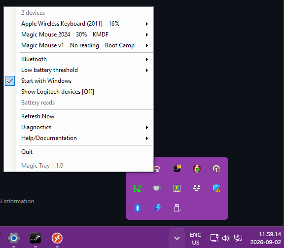

Which driver
v3 → KMDF. v1/v2 → Boot Camp. Keyboard → SDP. Trackpad → battery only.
Why v3 ≠ v2
0323 missing from Boot Camp. HID Mode A/B. Linked research.
Stars & signing
Star both repos. Goal: EV cert + attestation so KMDF drops Test Mode. No scroll-killing trial.